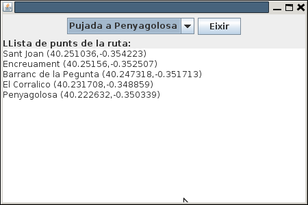

Exercicis
Exercici 1
Crea un classe anomenada Vis_Rutes_SQLite, que mostre les rutes amb el següent aspecte accedint a les dades guardades en Rutes.sqlite:

Podríem mantenir la connexió fins que s'aprete el botó d'Eixir, que és quan la tancaríem.
Ací teniu l'esquelet dels programes.
import java.awt.BorderLayout;
import java.awt.FlowLayout;
import java.awt.event.ActionEvent;
import java.awt.event.ActionListener;
import java.sql.Connection;
import java.util.ArrayList;
import javax.swing.JButton;
import javax.swing.JComboBox;
import javax.swing.JFrame;
import javax.swing.JLabel;
import javax.swing.JPanel;
import javax.swing.JTextArea;
public class Vis_Rutes_SQLite_Pantalla extends JFrame implements ActionListener{
JComboBox combo;
JButton eixir = new JButton("Eixir");
JTextArea area = new JTextArea();
Connection con;
public void iniciar(){
// sentències per a fer la connexió
this.setBounds(100, 100, 450, 300);
this.setLayout(new BorderLayout());
JPanel panell1 = new JPanel(new FlowLayout());
JPanel panell2 = new JPanel(new BorderLayout());
this.add(panell1,BorderLayout.NORTH);
this.add(panell2,BorderLayout.CENTER);
ArrayList<String> llista_rutes = new ArrayList<String>();
// sentències per a omplir l'ArrayList amb el nom de les rutes
combo = new JComboBox(llista_rutes.toArray());
panell1.add(combo);
panell1.add(eixir);
panell2.add(new JLabel("LLista de punts de la ruta:"),BorderLayout.NORTH);
panell2.add(area,BorderLayout.CENTER);
this.setVisible(true);
combo.addActionListener(this);
eixir.addActionListener(this);
this.setDefaultCloseOperation(JFrame.EXIT_ON_CLOSE);
}
@Override
public void actionPerformed(ActionEvent e) {
if (e.getSource() == combo){
//accions quan s'ha seleccionat un element del combobox, i que han de consistir en omplir el JTextArea
}
if (e.getSource() == eixir){
//accions quan s'ha apretat el botó d'eixir
}
}
}
public class Vis_Rutes_SQLite {
public static void main(String[] args) {
Vis_Rutes_SQLite_Pantalla finestra = new Vis_Rutes_SQLite_Pantalla();
finestra.iniciar();
}
}
Exercici 2
Anem a fer un programa també gràfic que accedisca a la Base de Dades geo (usuari geo, contrasenya geo) per a poder visualitzar les comarques, dins de la comarca les poblacions, i fins i tot per a una població saber el número d'instituts que té.
Al final tens l'esquelet del programa, tant del principal com el que implementa JFrame i que equival a la finestra.
Tindrem:
- Un JComboBox anomenat combo on voldrem visualitzar les comarques.
- Un botó anomenat eixir per a tancar la connexió i tancar el programa.
- Un JList anomenat list on visualitzarem els pobles de la comarca seleccionada (millor si és per ordre alfabètic)
- Un JTextField anomenat peu on visualitzarem el número d'instituts del poble seleccionat.
Aquestos components ja estan enllaçats, i tu només hauràs de posar les sentències en els mètodes del final que són:
- connexio(): instruccions per a inicialitzar l'objecte con, que és un objecte Connection, i ha de connectar a la Base de Dades PostgreSQL geo, amb l'usuari geo i contrasenya geo.
- eixir(): instruccions per a tancar la connexió i eixir del programa
- agafarComarques(): instruccions per a agafar el nom de les comarques per ordre alfabètic i col·locar-les en el JComboBox combo. Recorda que per a inserir en un JComboBox ja creat pos utilitzar el mètode combo.addItem(string).
- visualitzaCom(String comarca): instruccions per a posar en el JList anomenat list els pobles de la comarca que arriba com a paràmetre. Per a introduir elements en un JList és millor utilitzar l DefaultListModel associat a ell, que s'anomena listModel concretament amb el mètode listModel.addElement(string). Podem tenir la complicació que en el nom de la comarca tinguem una cometa (p.e. Vall d'Albaida), i podria fer que la sentència SQL siga errònia. Ho podem solucionar amb el mètode replaceAll() de la classe String, substituint tota cometa simple per dues cometes simples. Si per exemple tenim el nom de la comarca en el String comarca, faríem: comarca.replaceAll("'","''")
- visualitzaInstituts(String poble): instruccions per a comptar el número d'instituts del poble passat com a paràmetre i posar-lo en el JTextField anomenat peu. Pots mostrar-ho per exemple amb aquest format: Castelló de la Plana: 14 instituts . Podem tenir la mateixa complicació que abans, és a dir, que en el nom del poble tinguem una cometa (p.e. Alcora, l' ), i podria fer que la sentència SQL siga errònia. Ho podem solucionar amb el mètode replaceAll() de la classe String, substituint tota cometa simple per dues cometes simples. Si per exemple tenim el nom del poble String poble, faríem: poble.replaceAll("'","''")
Aquest seria un exemple d'execució:

L'esquelet quedarà ara d'aquesta manera:
package Exercici;
import java.awt.BorderLayout;
import java.awt.Color;
import java.awt.FlowLayout;
import java.awt.event.ActionEvent;
import java.awt.event.ActionListener;
import java.sql.Connection;
import java.sql.Statement;
import java.sql.ResultSet;
import java.util.Arrays;
import java.util.List;
import javax.swing.*;
import javax.swing.event.ListSelectionEvent;
import javax.swing.event.ListSelectionListener;
public class Pantalla_Veure_Pobles_Comarca_Combo_List extends JFrame implements ActionListener, ListSelectionListener {
private static final long serialVersionUID = 1L;
JLabel etiqueta = new JLabel("Comarca:");
JLabel et_ini = new JLabel("Introdueix la comarca:");
JComboBox combo = new JComboBox();
JButton eixir = new JButton("Eixir");
DefaultListModel listModel = new DefaultListModel();
JList list = new JList(listModel);
JTextField peu = new JTextField();
Connection con = null;
// en iniciar posem un contenidor per als elements anteriors
public void iniciar() {
this.setBounds(100, 100, 450, 300);
this.setLayout(new BorderLayout());
setTitle("Comarques, pobles i instituts");
// contenidor per als elements
JPanel panell1 = new JPanel(new FlowLayout());
panell1.add(et_ini);
panell1.add(combo);
panell1.add(eixir);
getContentPane().add(panell1,BorderLayout.NORTH);
JPanel panell2 = new JPanel(new BorderLayout());
panell2.add(etiqueta,BorderLayout.NORTH);
list.setForeground(Color.blue);
JScrollPane scroll = new JScrollPane(list);
panell2.add(scroll,BorderLayout.CENTER);
getContentPane().add(panell2,BorderLayout.CENTER);
getContentPane().add(peu,BorderLayout.SOUTH);
connexio();
agafarComarques();
setVisible(true);
combo.addActionListener(this);
list.addListSelectionListener(this);
eixir.addActionListener(this);
}
@Override
public void actionPerformed(ActionEvent e) {
if (e.getSource() == combo) {
etiqueta.setText("Llista de pobles de la comarca: " + combo.getSelectedItem());
visualitzaCom(combo.getSelectedItem().toString());
}
if (e.getSource() == eixir){
eixir();
}
}
@Override
public void valueChanged(ListSelectionEvent e){
JList l = (JList) e.getSource();
if (l.getSelectedIndex()>=0){
visualitzaInstituts(l.getSelectedValue().toString());
}
}
private void connexio(){
// Instruccions per a establir la connexió (inicialitzar con)
}
private void eixir(){
// Instruccions per a tancar la connexió i eixir del programa
}
private void agafarComarques(){
// Instruccions per a posar en el ComboBox el nom de totes les comarques, millor si és per ordre alfabètic
// Pots utilitzar el mètode de JComboBox addItem(string)
}
private void visualitzaCom(String comarca) {
// Instruccions per a llegir els pobles de la comarca que arriba com a paràmetre,
// i introduir-los en el JList
// La manera d'anar introduint informació en el JList és a través del DefaultListModel:
// listModel.addElement("Linia que es vol introduir ")
// Una manera de solucionar el problema de la cometa simple és utilitzar comarca.replaceAll("'","''").
}
private void visualitzaInstituts(String poble){
// Instruccions per a mostrar el número d'Instituts del poble seleccionat en el JTextField peu
// Una manera de solucionar el problema de la cometa simple és utilitzar poble.replaceAll("'","''").
}
}I aquest és el programa principal que crida l'anterior:
package Exercici;
public class Veure_Pobles_Comarca {
public static void main(String[] args) {
final Pantalla_Veure_Pobles_Comarca_Combo_List finestra = new Pantalla_Veure_Pobles_Comarca_Combo_List();
finestra.iniciar();
}
}Llicenciat sota la Llicència Creative Commons Reconeixement CompartirIgual 2.5